Module: awful.tooltip
Tooltip module for awesome objects.
A tooltip is a small hint displayed when the mouse cursor
hovers over a specific item.
In awesome, a tooltip can be linked with almost any
object having a :connect_signal() method and receiving
mouse::enter and mouse::leave signals.
How to create a tooltip?

local mytextclock = wibox.widget.textclock() local myclock_t = awful.tooltip { objects = { mytextclock }, timer_function = function() return os.date('Today is %A %B %d %Y\nThe time is %T') end, }
Alternatively, you can use mouse::enter signal:
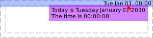
local mytextclock = wibox.widget.textclock() local myclock_t = awful.tooltip { } myclock_t:add_to_object(mytextclock) mytextclock:connect_signal('mouse::enter', function() myclock_t.text = os.date('Today is %A %B %d %Y\nThe time is %T') end)
How to create a tooltip without objects?
local tt = awful.tooltip { text = 'A tooltip!', visible = true, } tt.bg = beautiful.bg_normal
How to add the same tooltip to multiple objects?
myclock_t:add_to_object(obj1) myclock_t:add_to_object(obj2)
Now the same tooltip is attached to myclock, obj1, obj2.
How to remove a tooltip from several objects?
myclock_t:remove_from_object(obj1) myclock_t:remove_from_object(obj2)
Now the same tooltip is only attached to myclock.
Info:
- Copyright: 2009 Sébastien Gross
- Author: Sébastien Gross <seb•ɱɩɲʋʃ•awesome•ɑƬ•chezwam•ɖɵʈ•org>
Constructors
| awful.tooltip {[args]} | Create a new tooltip and link it to a widget. | |
Object properties
| wibox | wibox | The wibox containing the tooltip widgets. | |
| visible | boolean | Is the tooltip visible? | |
| align | string | The horizontal alignment. | |
| shape | gears.shape | The shape of the tooltip window. | |
| mode | string | Set the tooltip positioning mode. | |
| preferred_positions | table | The preferred positions when in outside mode. |
|
| preferred_alignments | string | The preferred alignment when using the outside mode. |
|
| text | string | Change displayed text. | |
| markup | string | Change displayed markup. | |
| timeout | number | Change the tooltip’s update interval. | |
| margins | number or table | Set all margins around the tooltip textbox | |
| border_width | number | The border width. | |
| border_color | color | The border color. | |
| margins_leftright | number | Set the margins around the left and right of the tooltip textbox | |
| margins_topbottom | number | Set the margins around the top and bottom of the tooltip textbox | |
Object methods
| :add_to_object (self, obj) | Add tooltip to an object. | |
| :remove_from_object (self, obj) | Remove tooltip from an object. | |
| :emit_signal (name, ...) | Emit a signal. | Inherited from gears.object |
| :connect_signal (name, func) | Connect to a signal. | Inherited from gears.object |
| :weak_connect_signal (name, func) | Connect to a signal weakly. | Inherited from gears.object |
Theme variables
| beautiful.tooltip_border_color | color | The tooltip border color. | |
| beautiful.tooltip_bg | color | The tooltip background color. | |
| beautiful.tooltip_fg | color | The tooltip foregound (text) color. | |
| beautiful.tooltip_font | string | The tooltip font. | |
| beautiful.tooltip_border_width | number | The tooltip border width. | |
| beautiful.tooltip_opacity | number | The tooltip opacity. | |
| beautiful.tooltip_shape | gears.shape | The default tooltip shape. | |
| beautiful.tooltip_align | string | The default tooltip alignment. | |
Constructors
- awful.tooltip {[args]}
-
Create a new tooltip and link it to a widget.
Tooltips emit
property::visiblewhen their visibility changes.Parameters:
- args Arguments for tooltip creation.
- timer_function
function
A function to dynamically set the
tooltip text. Its return value will be passed to
wibox.widget.textbox.set_markup. - timeout
number
The timeout value for
timer_function. (default 1) - objects table A list of objects linked to the tooltip. (optional)
- delay_show number Delay showing the tooltip by this many seconds. (optional)
- margin_leftright integer The left/right margin for the text. (default apply_dpi(5))
- margin_topbottom integer The top/bottom margin for the text. (default apply_dpi(3))
- shape gears.shape The shape (default nil)
- bg string The background color (optional)
- fg string The foreground color (optional)
- border_color string The tooltip border color (optional)
- border_width number The tooltip border width (optional)
- align string The horizontal alignment (optional)
- font string The tooltip font (optional)
- opacity number The tooltip opacity (optional)
- timer_function
function
A function to dynamically set the
tooltip text. Its return value will be passed to
Returns:
-
awful.tooltip
The created tooltip.
See also:
- args Arguments for tooltip creation.
Object properties
- wibox (wibox)
- The wibox containing the tooltip widgets.
- visible (boolean) · 1 signal
-
Is the tooltip visible?
Click to display more Emit signals:
property::visibleWhen the visible value changes.selfawful.tooltip The object which changed (useful when connecting many object to the same callback).new_valuebooleanThe new value affected to the property.
- align (string) · 1 signal · 1 theme variable
-
The horizontal alignment.
This is valid for the mouse mode only. For the outside mode, use preferred_positions.
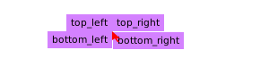
The following values are valid:
- top_left
- left
- bottom_left
- right
- top_right
- bottom_right
- bottom
- top
See also:
Click to display more Emit signals:
property::alignWhen the align value changes.selfawful.tooltip The object which changed (useful when connecting many object to the same callback).new_valuestring The new value affected to the property.
Consumed theme variables:
Theme variable Usage beautiful.tooltip_align Fallback when align isn't set. - shape (gears.shape) · 1 signal · 1 theme variable
-
The shape of the tooltip window.
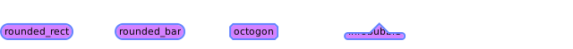
See also:
Click to display more Emit signals:
property::shapeWhen the shape value changes.selfawful.tooltip The object which changed (useful when connecting many object to the same callback).new_valueshape The new value affected to the property.
Consumed theme variables:
Theme variable Usage beautiful.tooltip_shape Fallback when shape isn't set. - mode (string) · 1 signal
-
Set the tooltip positioning mode. This affects how the tooltip is placed. By default, the tooltip is aligned close to the mouse cursor. It is also possible to place the tooltip relative to the widget geometry.
mouse:
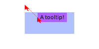
outside:
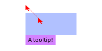
Valid modes are:
- “mouse”: Next to the mouse cursor
- “outside”: Outside of the widget
Click to display more Emit signals:
property::modeWhen the mode value changes.selfawful.tooltip The object which changed (useful when connecting many object to the same callback).new_valuestring The new value affected to the property.
- preferred_positions (table) · 1 signal
-
The preferred positions when in
outsidemode.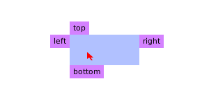
If the tooltip fits on multiple sides of the drawable, then this defines the priority.
The valid table values are:
- “top”
- “right”
- “left”
- “bottom”
The default is:
{"top", "right", "left", "bottom"}Type constraints:
- preferred_positions table The position, ordered by priorities
See also:
Click to display more Emit signals:
property::preferred_positionsWhen the preferred_positions value changes.selfawful.tooltip The object which changed (useful when connecting many object to the same callback).new_valuepreferred_positions The new value affected to the property.
- preferred_alignments (string) · 1 signal
-
The preferred alignment when using the
outsidemode.The values of the table are ordered by priority, the first one that fits will be used.
front:

middle:
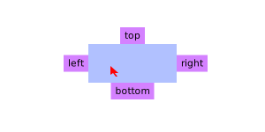
back:
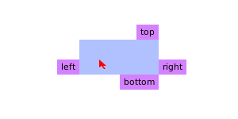
The valid table values are:
- front
- middle
- back
The default is:
{"front", "back", "middle"}See also:
Click to display more Emit signals:
property::preferred_alignmentsWhen the preferred_alignments value changes.selfawful.tooltip The object which changed (useful when connecting many object to the same callback).new_valuestring The new value affected to the property.
- text (string) · 1 signal
-
Change displayed text.
Type constraints:
- text
string
New tooltip text, passed to
wibox.widget.textbox.set_text.
See also:
Click to display more Emit signals:
property::textWhen the text value changes.selfawful.tooltip The object which changed (useful when connecting many object to the same callback).new_valuetext The new value affected to the property.
- text
string
New tooltip text, passed to
- markup (string) · 1 signal
-
Change displayed markup.
Type constraints:
- text
string
New tooltip markup, passed to
wibox.widget.textbox.set_markup.
See also:
Click to display more Emit signals:
property::markupWhen the markup value changes.selfawful.tooltip The object which changed (useful when connecting many object to the same callback).new_valuetext The new value affected to the property.
- text
string
New tooltip markup, passed to
- timeout (number) · 1 signal
-
Change the tooltip’s update interval.
Type constraints:
- timeout number The timeout value.
Click to display more Emit signals:
property::timeoutWhen the timeout value changes.selfawful.tooltip The object which changed (useful when connecting many object to the same callback).new_valuetimeout The new value affected to the property.
- margins (number or table) · 1 signal
-
Set all margins around the tooltip textbox
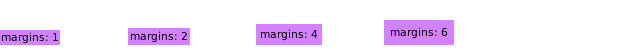
Type constraints:
- New number or table margins value
Click to display more Emit signals:
property::marginsWhen the margins value changes.selfawful.tooltip The object which changed (useful when connecting many object to the same callback).new_valueNewThe new value affected to the property.
- border_width (number) · 1 signal · 1 theme variable
-
The border width.
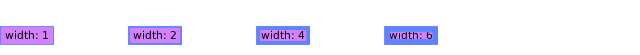
Click to display more Emit signals:
property::border_widthWhen the border_width value changes.selfawful.tooltip The object which changed (useful when connecting many object to the same callback).new_valuenumberThe new value affected to the property.
Consumed theme variables:
Theme variable Usage beautiful.tooltip_border_width Fallback when border_width isn't set. - border_color (color) · 1 signal
-
The border color.
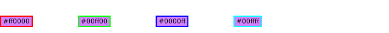
Click to display more Emit signals:
property::border_colorWhen the border_color value changes.selfawful.tooltip The object which changed (useful when connecting many object to the same callback).new_valuecolorThe new value affected to the property.
- margins_leftright (number) · 1 signal
-
Set the margins around the left and right of the tooltip textbox

Type constraints:
- New number margins value
Click to display more Emit signals:
property::margins_leftrightWhen the margins_leftright value changes.selfawful.tooltip The object which changed (useful when connecting many object to the same callback).new_valueNewThe new value affected to the property.
- margins_topbottom (number) · 1 signal
-
Set the margins around the top and bottom of the tooltip textbox
Type constraints:
- New number margins value
Click to display more Emit signals:
property::margins_topbottomWhen the margins_topbottom value changes.selfawful.tooltip The object which changed (useful when connecting many object to the same callback).new_valueNewThe new value affected to the property.
Object methods
- :add_to_object (self, obj)
-
Add tooltip to an object.
Parameters:
- self tooltip The tooltip.
- obj
gears.object
An object with
mouse::enterandmouse::leavesignals.
- :remove_from_object (self, obj)
-
Remove tooltip from an object.
Parameters:
- self tooltip The tooltip.
- obj
gears.object
An object with
mouse::enterandmouse::leavesignals.
- :emit_signal (name, ...) · Inherited from gears.object
-
Emit a signal.
Parameters:
- name string The name of the signal.
- ... Extra arguments for the callback functions. Each connected function receives the object as first argument and then any extra arguments that are given to emit_signal().
- :connect_signal (name, func) · Inherited from gears.object
-
Connect to a signal.
Parameters:
- name string The name of the signal.
- func function The callback to call when the signal is emitted.
- :weak_connect_signal (name, func) · Inherited from gears.object
-
Connect to a signal weakly.
This allows the callback function to be garbage collected and automatically disconnects the signal when that happens.
Warning: Only use this function if you really, really, really know what you are doing.
Parameters:
- name string The name of the signal.
- func function The callback to call when the signal is emitted.
Theme variables
- beautiful.tooltip_border_color (color)
- The tooltip border color.
- beautiful.tooltip_bg (color)
- The tooltip background color.
- beautiful.tooltip_fg (color)
- The tooltip foregound (text) color.
- beautiful.tooltip_font (string)
- The tooltip font.
- beautiful.tooltip_border_width (number)
- The tooltip border width.
- beautiful.tooltip_opacity (number)
-
The tooltip opacity.
Type constraints:
- number opacity Between 0 and 1
- beautiful.tooltip_shape (gears.shape)
-
The default tooltip shape.
The default shape for all tooltips is a rectangle. However, by setting
this variable they can default to rounded rectangle or stretched octogons.
Type constraints:
- shape gears.shape A gears.shape compatible function (default gears.shape.rectangle)
See also:
- beautiful.tooltip_align (string)
-
The default tooltip alignment.
See also: